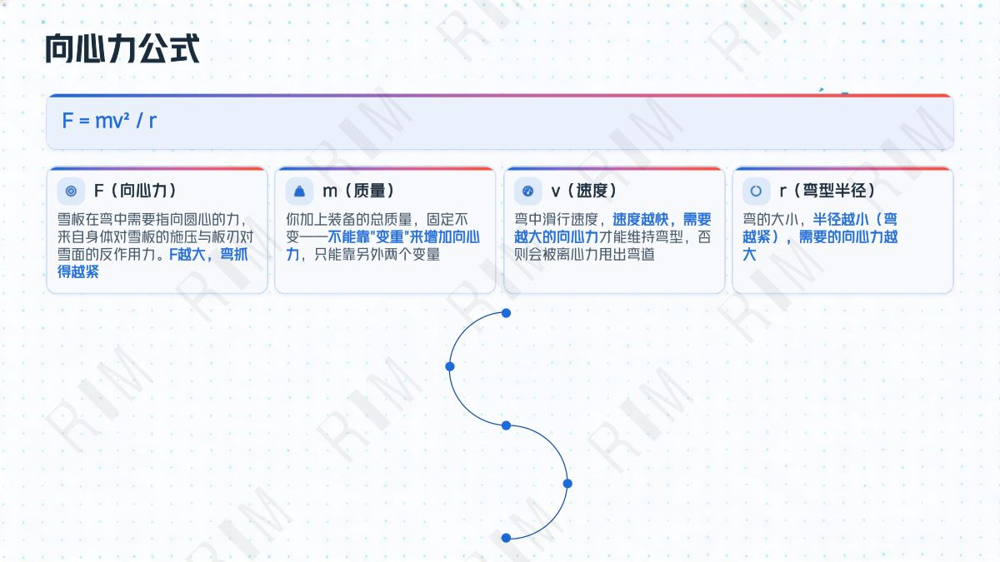
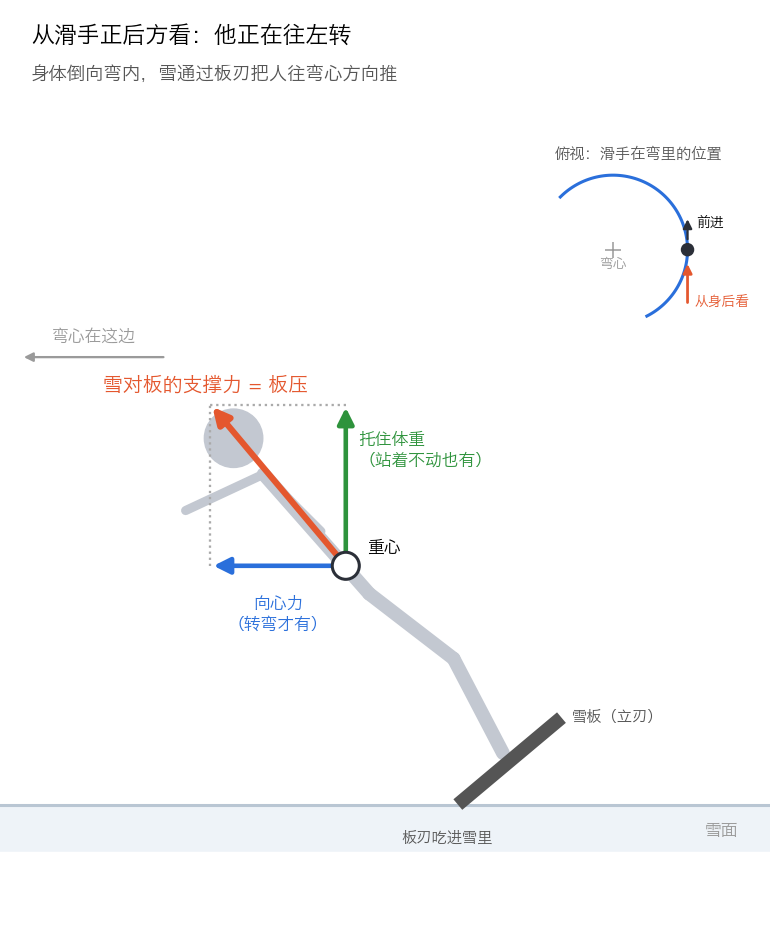
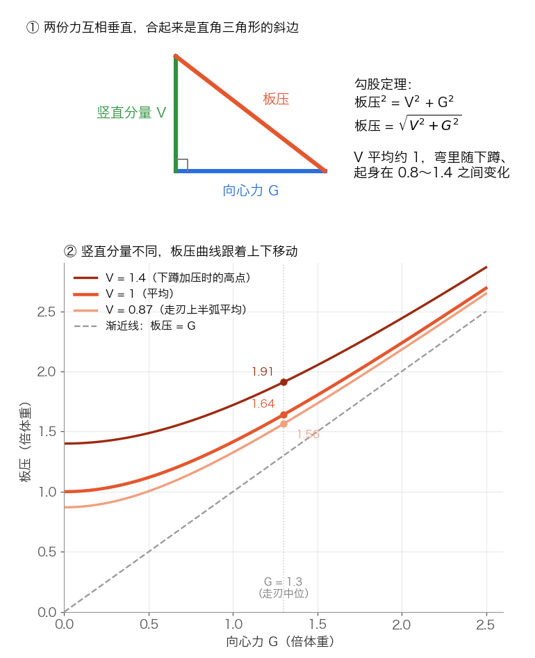
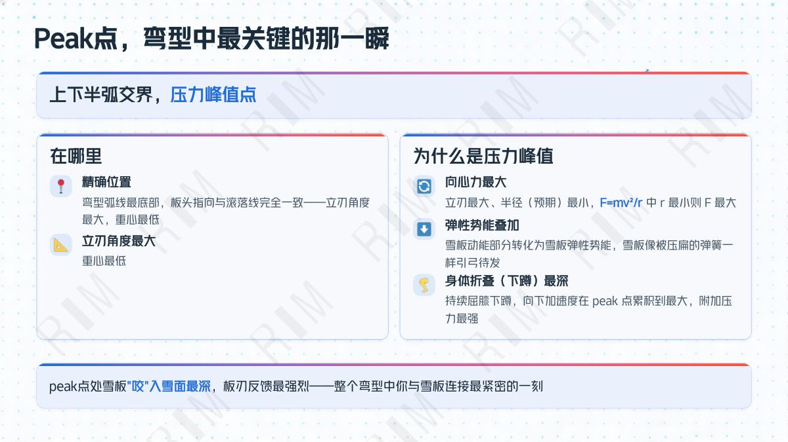
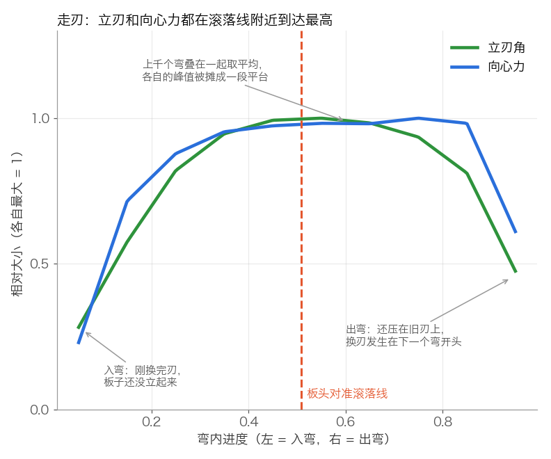
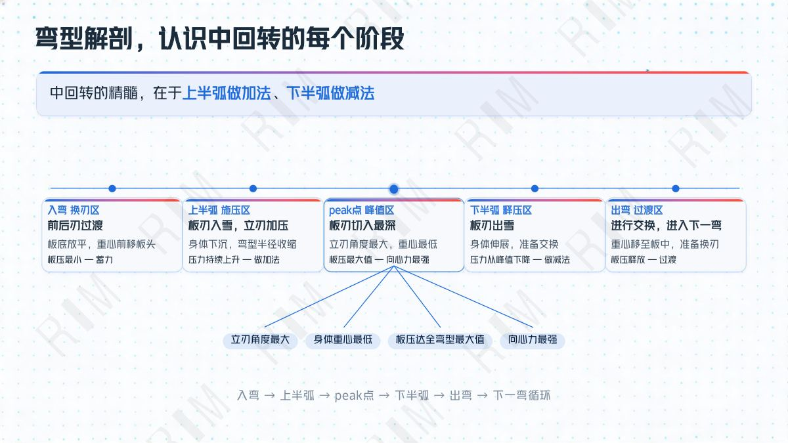
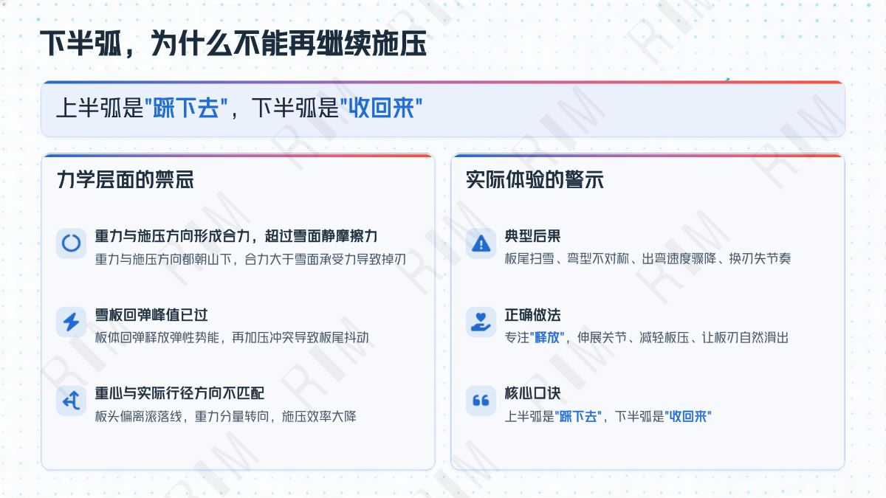
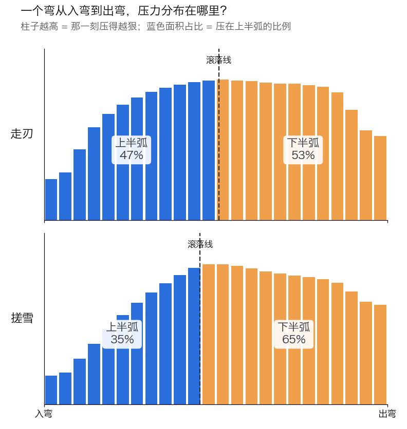
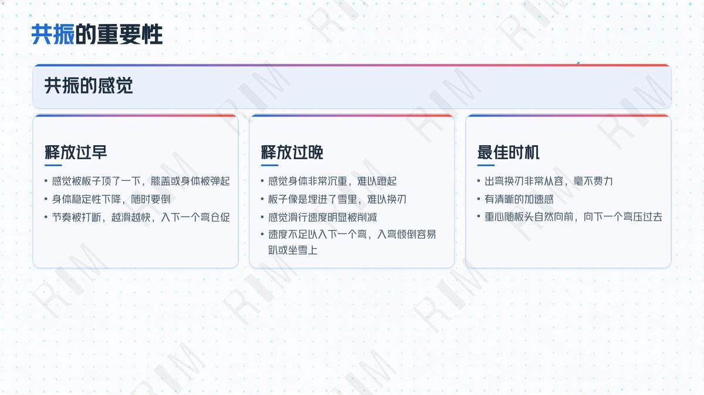
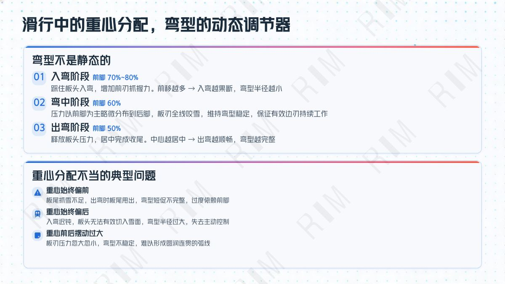

「F = mv² / r。F 越大，弯抓得越紧……速度越快，需要越大的向心力才能维持弯型……弯越紧，需要的向心力越大。」

App 里的「离心力」（英文界面叫 G-Force）表示这个弯里雪板承受的侧向力相当于几倍体重。专题第 17 页问到向心力和离心作用：离心力就是滑手身上感受到的那一侧，大小和向心力相同，方向相反。
向心力和板压是什么关系？雪对板的支撑力可以拆成两份：竖直的一份托住体重，站着不动也有；水平的一份指向弯心，就是向心力。两份合起来就是板压：


这是一条什么曲线？两份力互相垂直，所以板压就是直角三角形的斜边（勾股定理）。把公式两边平方：
这是一条等轴双曲线：两条轴一样长（都是 1），对称轴是纵轴，开口朝上下。这里只用到右上那一支（向心力 ≥ 0，板压 ≥ 1）。它有三个好记的特点：
| 向心力（倍体重） | 0.5 | 1.0 | 1.3 | 2.0 |
|---|---|---|---|---|
| 板压（倍体重） | 1.12 | 1.41 | 1.64 | 2.24 |
向心力越大，板压越大，两者一一对应。
所以 App 里的离心力可以直接拿来看「这个弯压得有多深」。它反映的是压出来的效果：压得越狠，弯越紧，向心力越大。速度同样会推高它，比较两个弯时放在相近速度下看会更公平。
「弯型弧线最底部，板头指向与滚落线完全一致——立刃角度最大，重心最低……向心力最大。」

我们把大量走刃弯叠在一起看：立刃角和向心力都在板头对准滚落线的前后到达最高。单看每一个弯，一半的弯立刃最大落在滚落线前后各 10% 的范围内。专题说的「板头对准滚落线、立刃最大、向心力最强」三件事同时发生，在真实滑行里是成立的。

横轴是一个弯从入弯到出弯的进度，两条线各自按最大值缩放到 1。
「中回转的精髓，在于上半弧做加法、下半弧做减法。」
「上半弧是『踩下去』，下半弧是『收回来』……典型后果：板尾扫雪、弯型不对称、出弯速度骤降。」


思路分三步：
这个比例就是我们说的「施压时机」。

把很多个弯叠在一起取平均：横轴是一个弯从入弯到出弯，柱子越高表示那一刻压得越狠，蓝色是滚落线之前，橙色是之后。
结果和专题的判断一致：走刃时，上半弧分到 47%，接近一半；搓雪时，上半弧只分到 35%：压力还没加满就过了滚落线，最用力的一段落在下半弧，正是专题第 21 页说的「下半弧继续施压」。在抽样的 17 位滑手里，走刃转弯足够多的 12 位我们逐个对比过，每一位都是走刃时比自己搓雪时压得更靠前：同一个人换一种滑法，压力的位置就跟着变，说明这个比例反映的是动作本身。
「入弯压弯板子，储存弹性势能；出弯瞬间释放压力，板子回弹……释放过早，感觉被板子顶了一下；释放过晚，感觉身体非常沉重，难以换刃。」

Heygo App 里的「压力释放」看的是换刃时旧弯的压力释放得够不够、顺不顺：释放充分，换刃更轻快，下一个弯接得更顺。
专题讲的「释放过早 / 过晚」是时机问题，和第 03 节的施压时机是一对：一个看什么时候压上去，一个看什么时候收回来。我们很想知道，你们在教学里是怎么判断释放时机对不对的。
「屈膝下蹲是向下加速运动，体重秤读数 = 自身重力 + 向下加速度附加力，这就是你对雪板施加的额外压力。」
「入弯阶段前脚 70%~80%……弯中阶段前脚 60%……出弯阶段前脚 50%。」

Heygo 装在两只脚上，跟着雪板一起走，量到的是雪板的姿态和受力效果。身体往下压的那一下，最终会变成更深的立刃和更大的向心力，这些我们都能看到。
下面几项是我们正在研究的方向，目标是把它们量得更准：
这几项我们会持续探索。专题里这些经验数字，正好可以作为我们验证时的参照，也很欢迎和你们一起对照真实滑行来看。
本页的分析来自抽样的真实雪场滑行数据：17 位不同阶段的滑手，约 1.3 万个转弯。